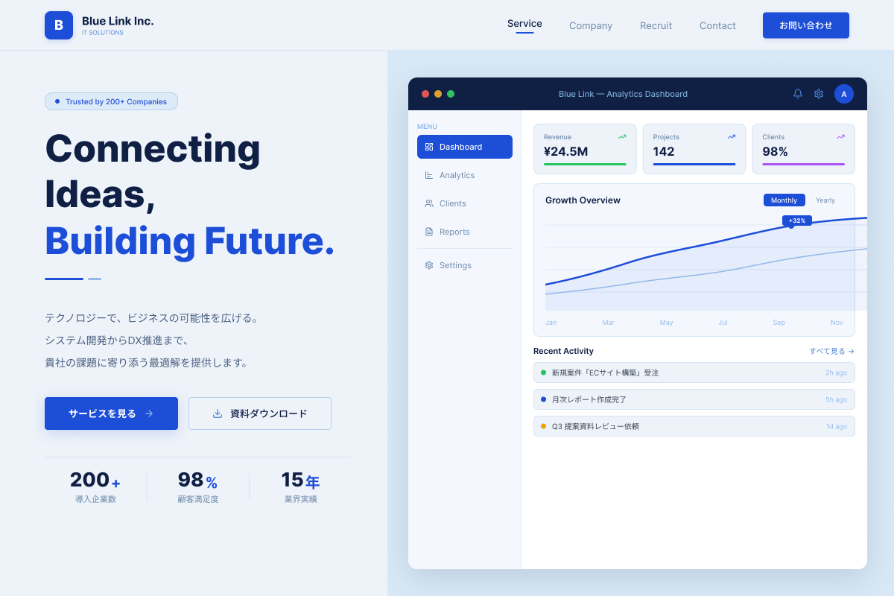

Works Detail
Corporate Website
Blue Link Inc.
信頼感と先進性を伝える、企業向けのWebサイトです。

Overview
架空のIT企業を想定して制作したコーポレートサイトです。 事業内容や会社情報が分かりやすく伝わるよう、信頼感のある構成を意識しました。
使用技術
HTML / CSS / JavaScript
制作期間
約1週間
担当範囲
デザイン / コーディング
工夫した点
企業サイトらしい信頼感を出すため、配色や余白、情報の整理に気をつけました。 初めて訪れるユーザーでも内容を理解しやすい構成を意識しています。
苦労した点
事業内容や会社情報を分かりやすく整理する点に苦労しました。 情報量が多くなりすぎないよう、シンプルな構成に整えました。